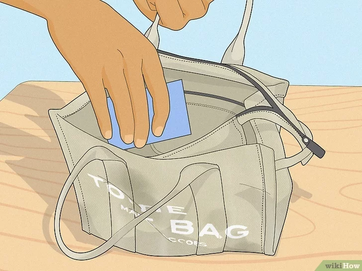
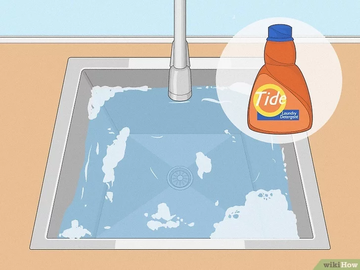
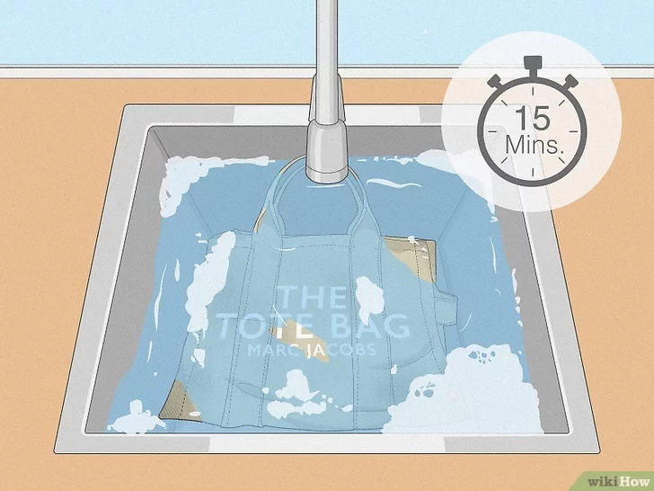
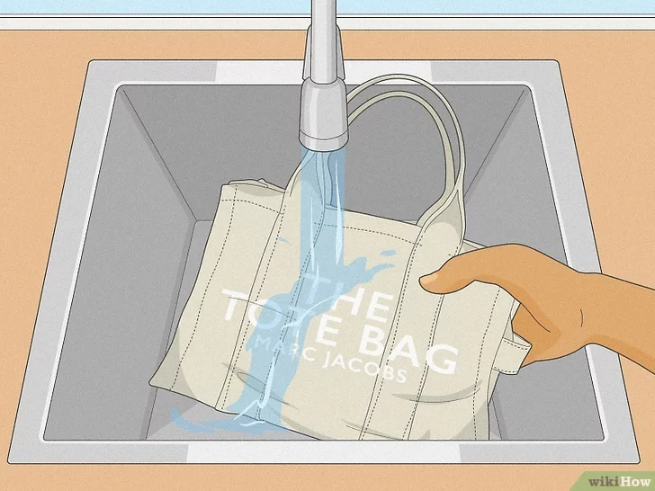
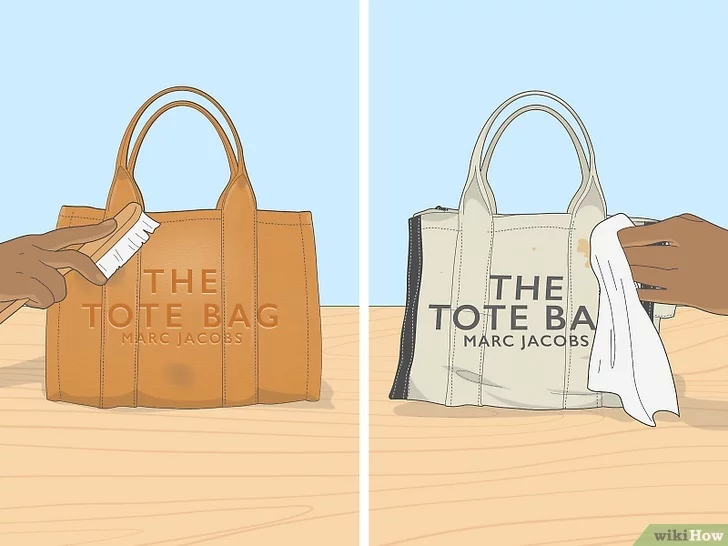
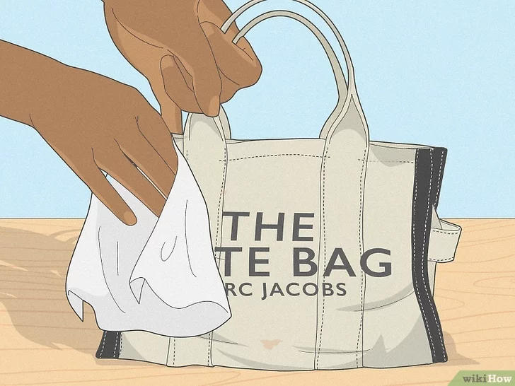
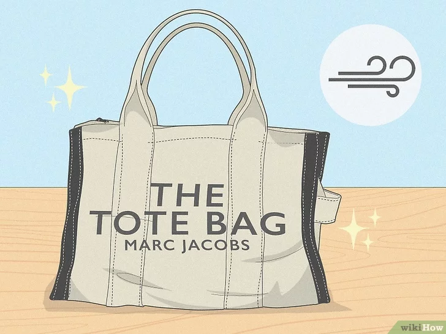
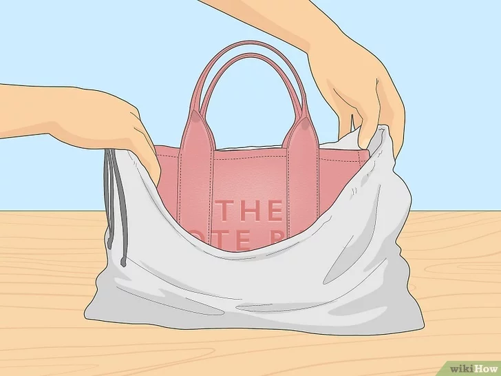
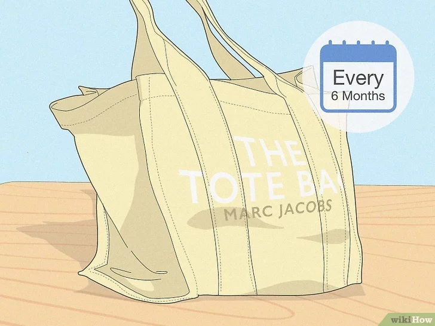
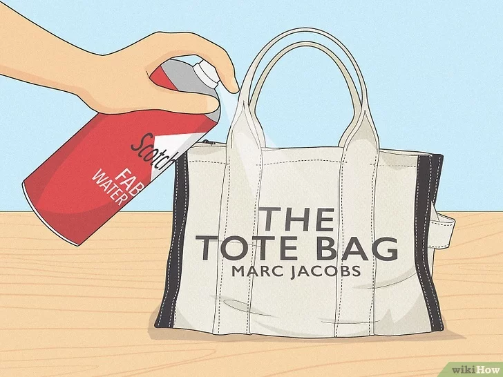

|  |
step 1 :
Soak a cloth or soft-bristled brush in water and laundry detergent. Mix 1 cup (237 mL) of water with a couple of drops of liquid detergent or a pinch of powder detergent and soak the brush or cloth in the solution.
For leather bags or bags with leather features: Skip the soapy brush and instead apply leather conditioner to the spot with a soft cloth. Buff the leather until it shines.[7]
For jacquard bags: Use a damp or dry soft cloth to gently blot out stains instead of soaking a cloth or brush. For tougher stains, consider taking your bag to a dry cleaner. |
|  |
step 2 :
Gently scrub the stain. Use the cloth or soft-bristled brush to gently scrub any stains until they come out. Then, with a new damp cloth, wipe down the bag to remove leftover suds.[8]
You can also use a shoe cleaner and conditioner or upholstery cleaner instead of detergent. Use a carpet cleaner to get really tough stains out of the canvas, but be sure to test the cleaner on a corner of the bag first. |
|  |
step 3 :
Allow the bag to air-dry. Hang up your tote bag in an area away from direct sunlight to avoid fading. Allow it to dry completely before using it again.[9]
|
|  |
step 4 :
Soak a cloth or soft-bristled brush in water and laundry detergent. Mix 1 cup (237 mL) of water with a couple of drops of liquid detergent or a pinch of powder detergent and soak the brush or cloth in the solution.
For leather bags or bags with leather features: Skip the soapy brush and instead apply leather conditioner to the spot with a soft cloth. Buff the leather until it shines.[7]
For jacquard bags: Use a damp or dry soft cloth to gently blot out stains instead of soaking a cloth or brush. For tougher stains, consider taking your bag to a dry cleaner. |
|  |
step 5 :
Gently scrub the stain. Use the cloth or soft-bristled brush to gently scrub any stains until they come out. Then, with a new damp cloth, wipe down the bag to remove leftover suds.[8]
You can also use a shoe cleaner and conditioner or upholstery cleaner instead of detergent. Use a carpet cleaner to get really tough stains out of the canvas, but be sure to test the cleaner on a corner of the bag first.
|
|  |
step 6 :
Allow the bag to air-dry. Hang up your tote bag in an area away from direct sunlight to avoid fading. Allow it to dry completely before using it again |
|  |
step 7 :
Store your tote bag in a dust bag when you aren’t using it. Most Marc Jacobs backpacks, purses, and bags come with a dust bag so you can keep your bag clean when not in use. Keep your tote bag stuffed with tissue paper and store it in a room-temperature place away from direct sunlight or excessive moisture.[10]
Marc Jacobs also has a 1-year Bags and Leather Goods Warranty. Contact the store where you purchased the bag for warranty information. |
|  |
step 8 :
Deep clean your bag every 6 months. To keep your tote bag looking great, aim to deep clean it about every 6 months and spot-clean as needed. If you use your bag every day, consider cleaning it a little more often (about every 3 months).
To keep your bag clean, avoid setting it on the ground, where it might be more likely to get stained.
Unless the care label says to, always hand wash your bag and avoid putting it in the washing machine to prevent it from becoming damaged.
|
|  |
step 9 :
Fold in the bottom corners. Take the bottom right corner and fold it so that the edge lines up with the center of the frog. Crease it with your finger. Now fold in the left bottom corner in the same way, so that its edge meets the edge of the other side at the center, creating an upside-down kite shape. |
|  |
step 10 :
Apply a water-resistant spray to protect your bag from staining. To protect your bag from hard-to-clean stains and water damage in the future, apply a water-resistant spray to the inside and outside of the bag. Reapply the spray after each wash.[12]
Some recommend using Scotchguard Fabric Protector, a specific brand of stain and water-repellent spray. |